Format A4 prêt à imprimer ou à envoyer par email.
Moyennes calculées sur 9 semaines d'historique (janvier-février 2026), soit 885 expéditions analysées.
Chaque barre représente le tonnage moyen d'une semaine typique. Le nombre de camions est indiqué en haut de chaque barre (arrondi supérieur sur une cible de 20 t/camion).
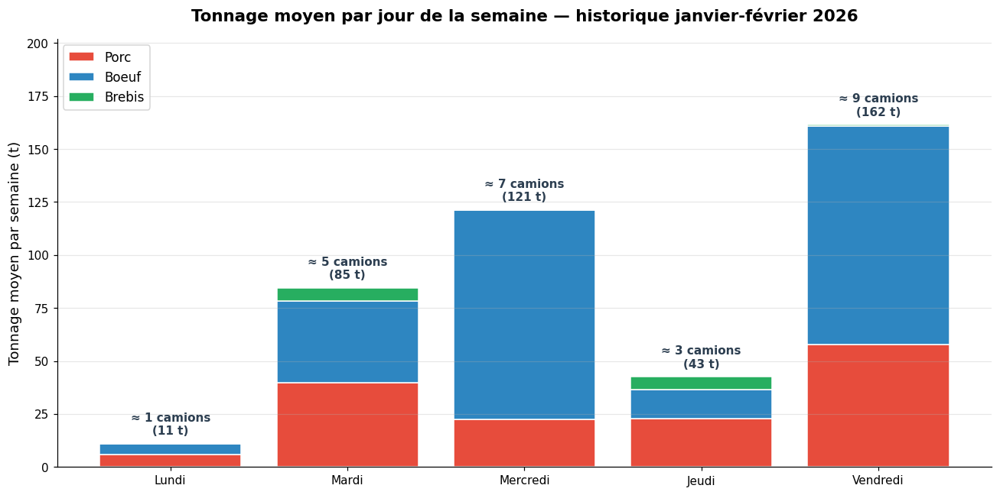
Évolution du volume total semaine par semaine. On observe une montée en régime de ~140 t (semaine 1) à ~580 t (semaine 9).
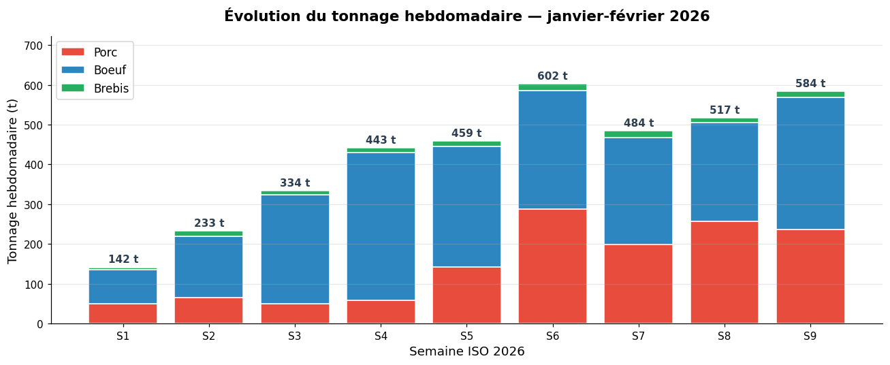
Camions estimés par semaine, par abattoir et par type de viande.
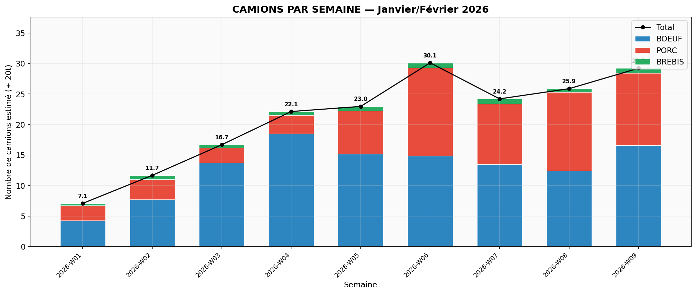
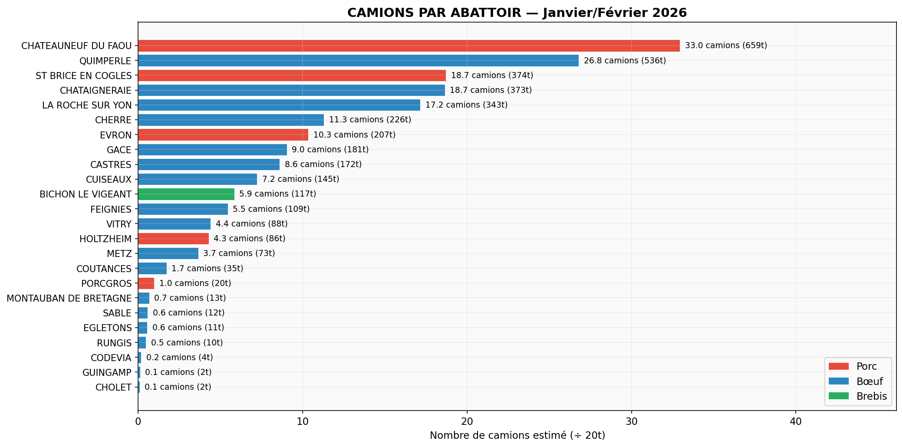
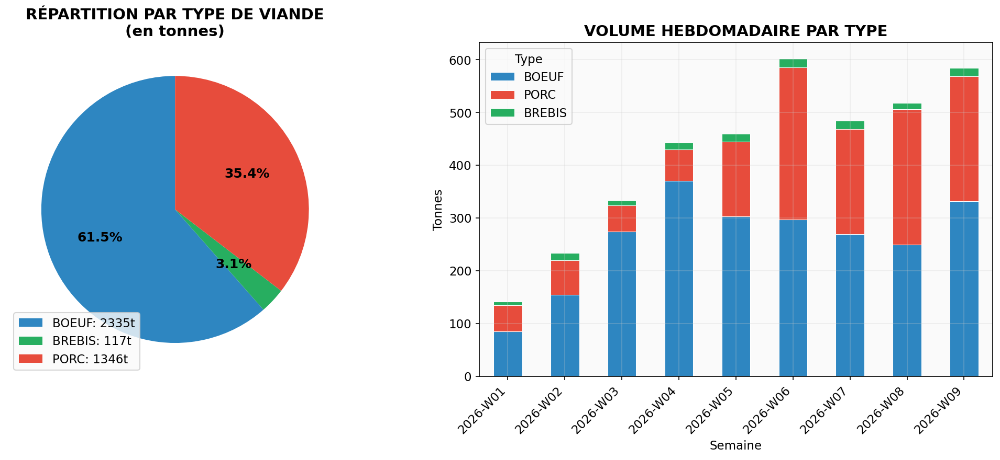
Volume quotidien, répartition par jour de la semaine et heatmap abattoir × semaine (identification des pics et des creux).
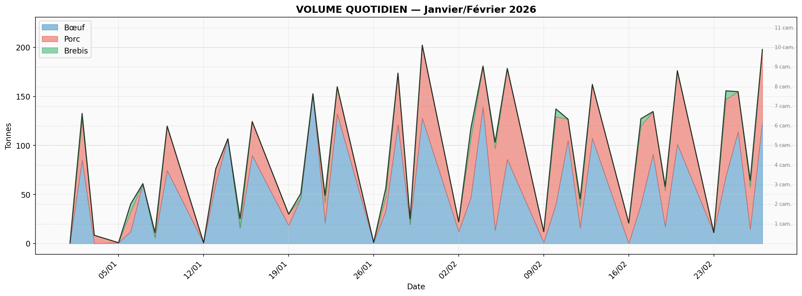
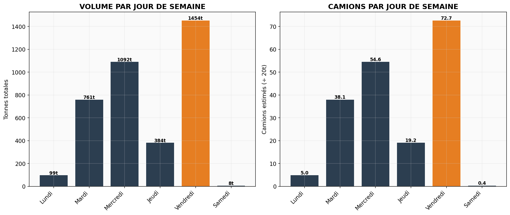
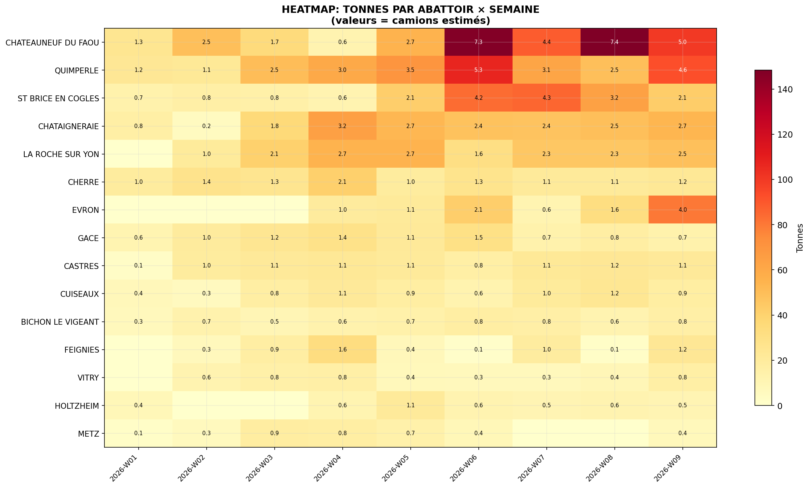
Top routes France → Italie et top destinations italiennes. 47 destinations sont servies par 2+ abattoirs — autant d'opportunités de consolidation via le hub Mâcon.
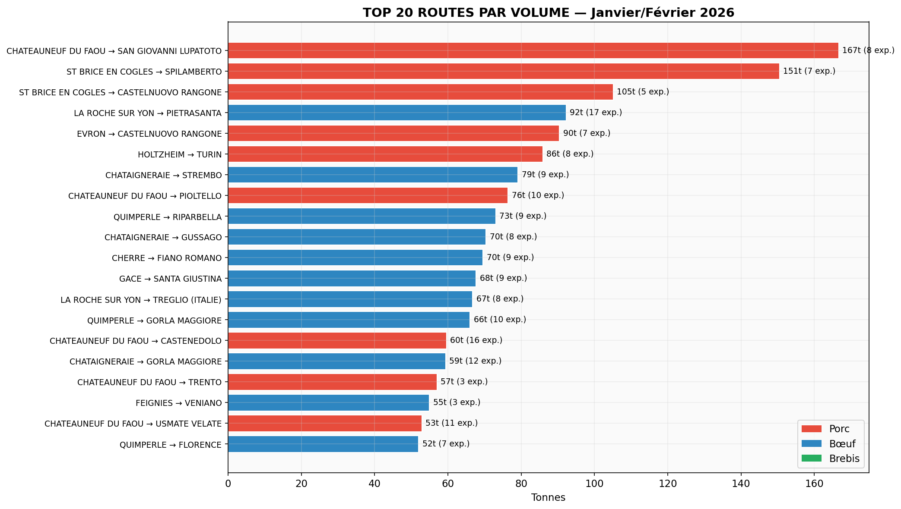
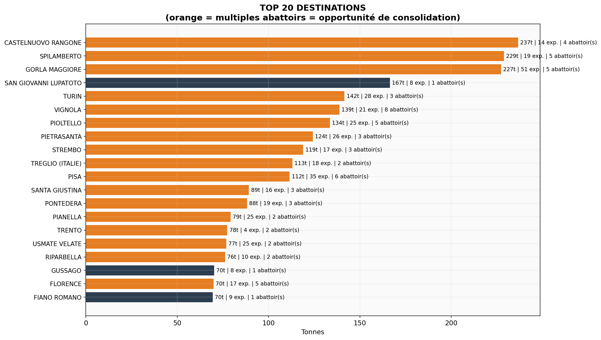
Prévisions de volume par abattoir et mesure de stabilité du trafic par site.
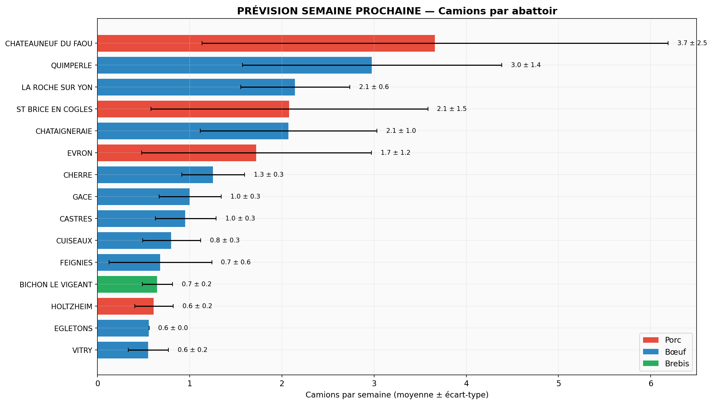
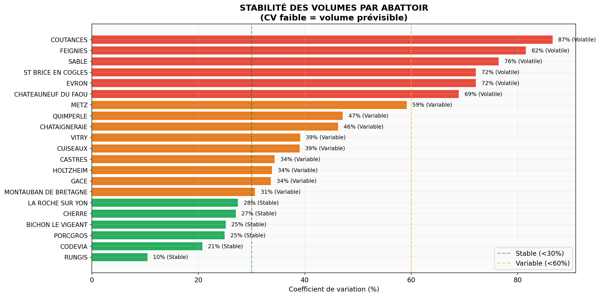
| Jour | 🚛 DIRECT ITALIE | 🏭 ARRIVÉES MÂCON | 🤝 GROUPAGE MASSIFIÉ | ⏳ ATTENTE J+1 | ||||||
|---|---|---|---|---|---|---|---|---|---|---|
| Nb | Tonnage | Origines | Nb | Tonnage | Origines | Nb | Tonnage | Nb | Tonnage | |
| Lundi | 0 | 0.0 t | — | 1 | 11.2 t | Egletons | — | — | — | — |
| Mardi | 6 | 112.5 t | Bichon Le Vigeant, Chateauneuf Du Faou, Evron, La Roche Sur Yon (+1) | 2 | 33.5 t | Chataigneraie, Gace, La Roche Sur Yon, Quimperle | 3 | 9.7 t | — | — |
| Mercredi | 4 | 66.7 t | Chateauneuf Du Faou, Cuiseaux, Evron, Quimperle | 4 | 60.8 t | Chataigneraie, Cherre, Cuiseaux, La Roche Sur Yon (+2) | 3 | 27.3 t | — | — |
| Jeudi | 2 | 42.9 t | St Brice En Cogles | 1 | 13.0 t | Cuiseaux, Vitry | 1 | 7.1 t | 1 | 1.6 t |
| Vendredi | 7 | 114.7 t | Castres, Chataigneraie, Chateauneuf Du Faou, Evron (+4) | 5 | 83.3 t | Chataigneraie, Cherre, Coutances, Cuiseaux (+4) | — | — | — | — |
| TOTAL | 19 | 13 | 7 | 1 | ||||||
| N° | Type | Charge | Origine(s) | Destination(s) | Action Mâcon |
|---|---|---|---|---|---|
| T1 | BŒUF | 11.2 t 56% | Egletons | Mâcon (Hub) | 🔧 Arrivée Mâcon → à compléter (44% manquant) |
| N° | Type | Charge | Origine(s) | Destination(s) | Action Mâcon |
|---|---|---|---|---|---|
| T1 | PORC | 21.1 t 105% | Evron | Castelvetro Di Modena, Spilamberto | ✈️ Transit direct → Italie |
| T2 | PORC | 21.0 t 105% | Chateauneuf Du Faou | Campagna | ✈️ Transit direct → Italie |
| T3 | PORC | 20.8 t 104% | Chateauneuf Du Faou | San Giovanni Lupatoto | ✈️ Transit direct → Italie |
| T4 | PORC | 15.7 t 79% | Chateauneuf Du Faou | Castenedolo, Citta Di Castello (+3) | ✈️ Transit direct → Italie |
| T5 | BŒUF + BREBIS | 14.0 t 70% | Bichon Le Vigeant + La Roche Sur Yon | Treglio | ✈️ Transit direct → Treglio (Marfisi 1er) |
| T6 | BREBIS | 4.0 t 20% | Bichon Le Vigeant | Carpineto Sinello, Pianella | 🤝 Groupage massifier avec autres clients |
| T7 | BŒUF | 20.0 t 100% | Quimperle | Tione Di Trento | ✈️ Transit direct → Italie |
| T8 | BŒUF | 2.6 t 13% | Castres | Florence, Montemurlo (+1) | 🤝 Groupage massifier avec autre client |
| T9 | BŒUF | 17.8 t 89% | Chataigneraie + La Roche Sur Yon | Mâcon (Hub) | 🔧 Arrivée Mâcon → à compléter (11% manquant) |
| T10 | BŒUF | 3.1 t 16% | Vitry | Mâcon (Hub) | 🤝 Groupage massifier avec autre client |
| T11 | BŒUF | 15.7 t 79% | Gace + Quimperle | Mâcon (Hub) | 🔧 Arrivée Mâcon → à compléter |
| N° | Type | Charge | Origine(s) | Destination(s) | Action Mâcon |
|---|---|---|---|---|---|
| T1 | PORC | 19.9 t 99% | Evron | Calcinato, Vignola | ✈️ Transit direct → Italie |
| T2 | PORC | 21.1 t 106% | Chateauneuf Du Faou | Castelnuovo Rangone | ✈️ Transit direct → Italie |
| T3 | BŒUF | 5.7 t 29% | Cuiseaux | Treglio | ✈️ Transit direct → Treglio (Marfisi 1er) |
| T4 | BŒUF | 20.0 t 100% | Quimperle | Vignola | ✈️ Transit direct → Italie |
| T5 | BŒUF | 11.9 t 59% | Castres | Bargagli, Camaiore (+8) | 🤝 Groupage massifier avec autre client |
| T6 | BŒUF | 7.0 t 35% | Metz + Cuiseaux | Mâcon (Hub) | 🔧 Arrivée Mâcon → à compléter |
| T7 | BŒUF | 17.6 t 88% | Chataigneraie + Cherre | Mâcon (Hub) | 🔧 Arrivée Mâcon → à compléter (12% manquant) |
| T8 | BŒUF | 15.4 t 77% | Chataigneraie + La Roche Sur Yon | Mâcon (Hub) | 🔧 Arrivée Mâcon → à compléter (23% manquant) |
| T9 | BŒUF | 20.8 t 104% | Quimperle | Mâcon (Hub) | ✅ Arrivée Mâcon → réexpédier tel quel |
| T10 | BŒUF | 4.6 t 23% | Quimperle + Gace | Mâcon (Hub) | 🤝 Groupage massifié |
| T11 | BŒUF | 10.8 t 54% | Vitry + Feignies | Mâcon (Hub) | 🤝 Groupage massifié → Mâcon |
| N° | Type | Charge | Origine(s) | Destination(s) | Action Mâcon |
|---|---|---|---|---|---|
| T1 | PORC | 21.5 t 108% | St Brice En Cogles | Spilamberto | ✈️ Transit direct → Italie |
| T2 | PORC | 21.4 t 107% | St Brice En Cogles | Castelnuovo Rangone | ✈️ Transit direct → Italie |
| T3 | BREBIS | 7.1 t 35% | Bichon Le Vigeant | Pianella, Pretoro | 🤝 Groupage massifier avec autres clients de brebis |
| T4 | BŒUF | 13.0 t 65% | Cuiseaux + Vitry | Mâcon (Hub) | 🔧 Arrivée Mâcon → à compléter |
| T5 | BŒUF | 1.6 t 8% | Chataigneraie | Mâcon (Hub) | ⏳ Reporté J+1 |
| N° | Type | Charge | Origine(s) | Destination(s) | Action Mâcon |
|---|---|---|---|---|---|
| T1 | PORC | 20.2 t 101% | Evron | Castelnuovo Rangone, Langhirano | ✈️ Transit direct → Italie |
| T2 | PORC | 19.3 t 96% | Evron | Calcinato, Castelnuovo Rangone (+1) | ✈️ Transit direct → Italie |
| T3 | PORC | 21.1 t 106% | Chateauneuf Du Faou | Calcinato, Castenedolo (+3) | ✈️ Transit direct → Italie |
| T4 | PORC | 13.6 t 68% | Holtzheim + Porcgros | Turin, Spilamberto | ✈️ Transit direct → Italie |
| T5 | BŒUF | 7.2 t 36% | Castres | Treglio, Pianella | ✈️ Transit direct → Italie |
| T6 | BŒUF | 15.1 t 75% | Chataigneraie + La Roche Sur Yon | Strembo | ✈️ Transit direct → Italie |
| T7 | BŒUF | 18.2 t 91% | Feignies | Veniano | ✈️ Transit direct → Italie |
| T8 | BŒUF | 6.2 t 31% | Cuiseaux + Metz | Mâcon (Hub) | 🔧 Arrivée Mâcon → à compléter |
| T9 | BŒUF | 20.7 t 103% | Chataigneraie | Mâcon (Hub) | ✅ Arrivée Mâcon → réexpédier tel quel |
| T10 | BŒUF | 21.4 t 107% | Cherre + La Roche Sur Yon | Mâcon (Hub) | ✅ Arrivée Mâcon → réexpédier tel quel |
| T11 | BŒUF | 19.4 t 97% | Cherre + Quimperle | Mâcon (Hub) | ✅ Arrivée Mâcon → réexpédier tel quel |
| T12 | BŒUF | 15.6 t 78% | Coutances + Gace + Sable | Mâcon (Hub) | 🔧 Arrivée Mâcon → à compléter (22% manquant) |